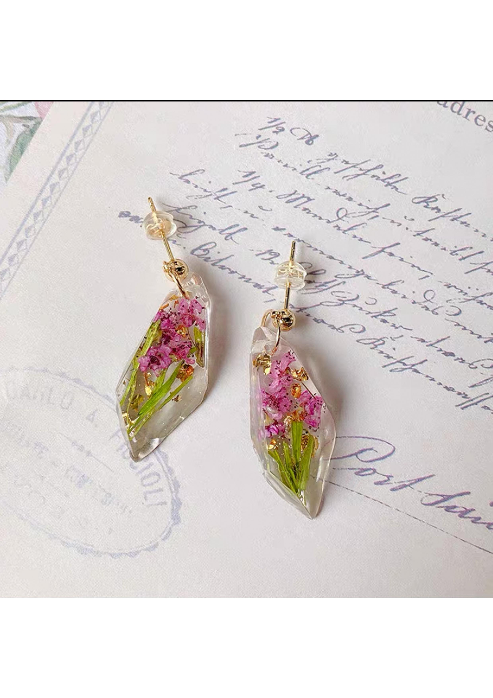
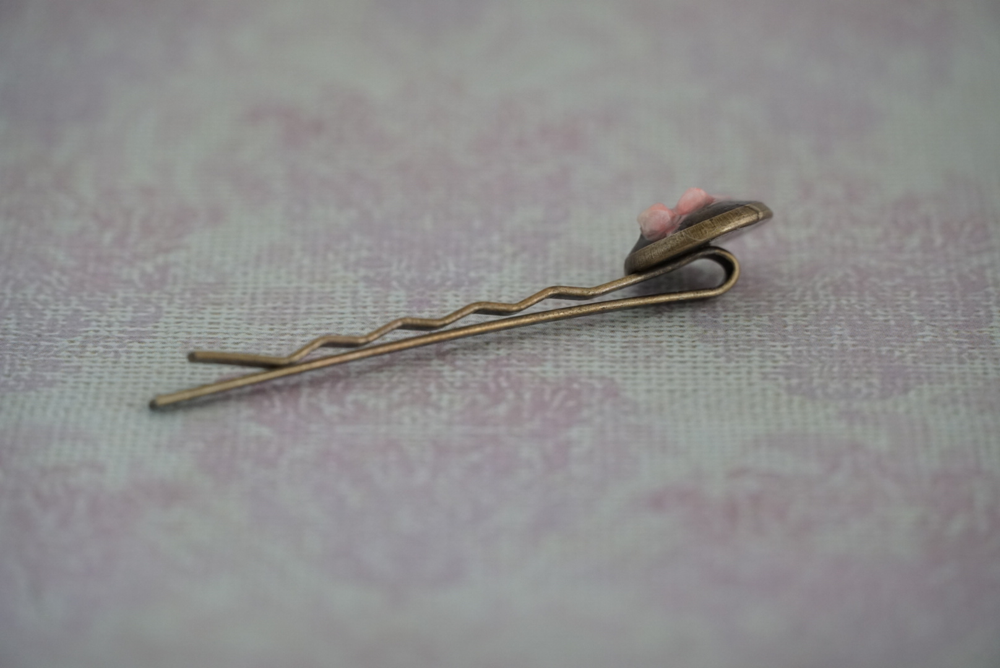

HOME
手作りのレジンフラワー紹介サイトです。ドライフラワーとレジンで作ったアクセサリーを紹介するサイトです。
コンセプト:
自分は家にかすみそうを育って、かすみ草は他の花と違って、枯れても臭くならなくて、水がなくても、飾りとして、家においているだけで心が癒される。自分も結構花が好きで、スターチスとか枯れても臭くならない。それで、もし、枯れた花は永遠に残れるのがいいと思います。レジンを使って、綺麗な形を残せるといいです。
目的：
自分のイメージを形にできるとても魅力的な樹脂材料です。硬化したレジンも透明感があり、ビーズや押し花、モチーフなどを封入した魅力的な作品作りができます。透き通る透明感が特徴のレジンですが、着色をすることによりさまざまな色を楽しんだり、表面に加工をすることでマットな質感にしたりと、制作者のアイデア次第で多種多様な作品を作り出すことができますよ！
「好きな物入れて、好きな色に着色し、好きな形固める
おすすめ
ピアスです。
使用した花：
お花はダイソーで買ったけど、名前はよく知りませんでした
紹介したい点：
同じな穴あき、シリコンモールドを使って、色違いのお花を入れてみました。綺麗な色になりました。


WORKS


使用した素材：スターフラワー,真珠、
紹介したい点：：真珠を使って、お花の芯として、意外と悪くなかった。
WORKS


使用した素材：セリアで購入したお花とピアスパーツです。
紹介したい点：パーツをレジンに挿す時、何回もずれました。可愛くて見えます。
WORKS
- 
使用した素材：Amazonで購入したお花とピアスパーツです。
紹介したい点：大きめの穴あきのパーツを使用して、形が綺麗にできて、透明感があります。
WORKS
中華風、キーホルダー
使用した素材：かすみ草
紹介したい点：リュック、鞄につけてみてください。
WORKS
かすみ草のキーホルダー
WORKS
ネックレス
使用した素材：さくら
紹介したい点：首につけて、写真を撮ってみたけど、綺麗に見えないから、やめました。
WORKS
- 
名前：前髪クリップ
使用した素材：さくら、
紹介したい点：髪の毛を止めます。
WORKS
名前：指輪
使用した素材：スターフラワー
紹介したい点：何回も外して、色々なお花を貼り付けてみました。これは一番可愛いと思います。
About
陳 肖雨です
よろしくお願いします。
好きな作品があったら、絶非教えてください。